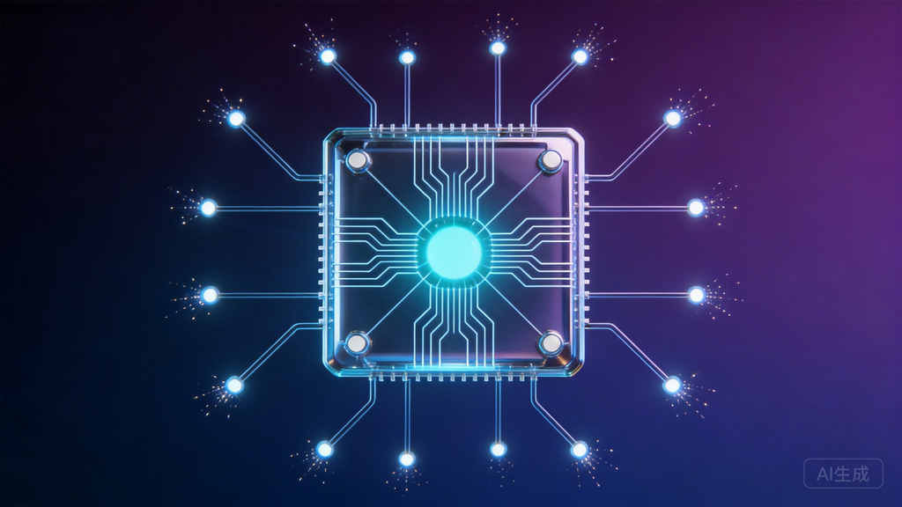
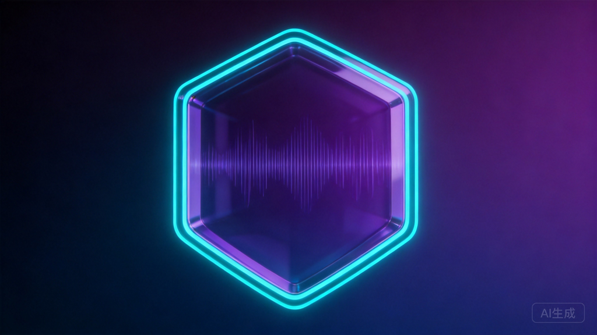
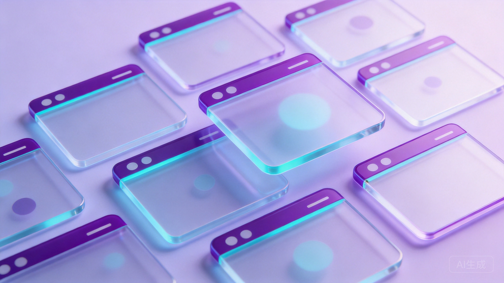
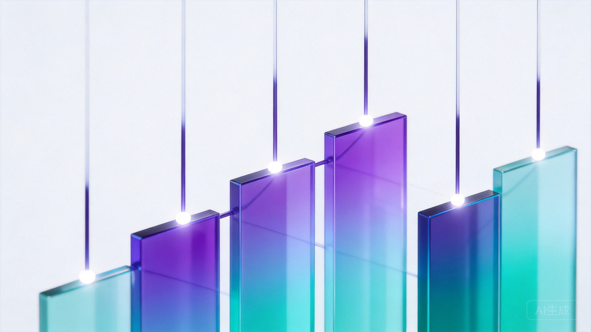

一周三件事，看懂AI产业变局
7月9日，OpenAI发布GPT-5.6全系列模型（Sol/Terra/Luna三档），新增多智能体并行能力且降价最高40%，被公司称为"全球最强模型"(OpenAI官网)。然而仅两天后，苹果便以41页诉状起诉OpenAI系统性窃取硬件商业机密(Artiverse)，同期安全负责人、AGI负责人、首席未来学家三位高管相继离职，OpenAI正处于技术突进与组织动荡的十字路口。
MiniMax完成约160亿港元再融资（7倍超额认购），智谱AI启动314亿港元配售创下港股科技企业纪录，可灵AI获约30亿美元融资，三家互联网大厂罕见同台(网易新闻)。阶跃星辰7月13日发布全球首个智能体原生操作系统Step AOS和首款大模型原生AI手机STEPX Neo，标志着AI终端竞争从"加AI"迈向"AI原生"新阶段(雷峰网)。
一是7月17-20日在上海举办的世界人工智能大会（习近平主席将出席并发表主旨演讲），超300款产品全球首发(新华网)；二是7月底科技巨头Q2财报季，微软、谷歌、Meta、亚马逊等集中披露AI资本开支指引，将定调下半年算力周期方向(浙商证券)；三是8月2日EU AI Act透明度规则正式生效，全球AI监管进入硬约束时代(Shared Sapience)。
2026年7月8日 — 7月14日

7月9日，OpenAI通过官网一次性发布GPT-5.6全系列模型，打破过去"单旗舰"模式，首次同时推出三个不同定位的版本：Sol（旗舰速度版）、Terra（均衡推理版）、Luna（高性价比深度分析版）(OpenAI官网)。这一产品矩阵策略表明，OpenAI已从追逐单一"最强模型"转向满足不同场景下性能、成本、速度的差异化权衡。
本次升级最具战略意义的是多智能体并行处理功能——ultra模式下支持四个智能体同时工作，在编程、科学计算、网络安全等领域实现性能显著跃升。API价格较上一代最高下调40%，配合能力提升，被业内解读为大模型从"对话工具"正式升级为"任务执行平台"的标志(CSDN)。GPT-5.6同步成为Microsoft 365 Copilot的首选模型，覆盖Word、Excel、PowerPoint、聊天和Cowork等全场景。
发布之际，OpenAI CEO萨姆·奥尔特曼与xAI CEO埃隆·马斯克在社交媒体展开新一轮"隔空掐架"。马斯克称奥尔特曼"把诈骗提升到全新高度"，奥尔特曼则回击"许多基准测试表明5.6 Sol是全球最强模型，但最能说明这一点的是埃隆又开始对我念念不忘了"(凤凰网)。这场口水战的背后，是大模型领域从技术比拼延伸到商业与舆论层面的全面竞争。
与GPT-5.6同期发布的还有两款重要产品。7月8日，GPT-Live新一代语音模型发布，使AI与人的语音对话更加自然流畅，现已驱动ChatGPT语音功能，标志着实时语音交互体验进入新阶段(OpenAI官网)。
7月9日发布的ChatGPT Work则更具突破性——它不再是聊天机器人，而是一款能够跨越应用与文件执行操作的智能体，可以花费数小时持续跟进项目，将目标转化为最终成果。这一产品直接对标Microsoft Copilot，也意味着OpenAI与微软这对"合作伙伴"在企业级市场的竞争关系日益显性化(俄媒AI周报)。
Anthropic本周推出Sonnet 5模型，在基准测试中直接对标GPT-5.6 Terra，主打中端市场的性价比竞争。Sonnet 5延续了Anthropic在AI安全与对齐领域的品牌定位，强化了行为控制机制，这一差异化策略在企业客户销售中成为重要卖点——尤其是在担心不受控回答带来声誉风险的大型企业中(俄媒AI周报)。
同时，Anthropic在Claude Code中集成了沙盒浏览器功能，使AI能够在安全分类器保护下导航、点击和输入真实网站内容。这项功能发布之际，哈佛法学院一位讲师提出应按犬种分类方式对AI智能体进行分级，以确定智能体造成损害时的责任归属——这一讨论预示着Agent时代的法律框架正在从抽象走向具体(Shared Sapience)。
7月13日，国内大模型公司阶跃星辰在上海举办"新一代智能体战略发布会"，推出其首个大模型原生AI终端品牌STEPX，并同步发布三款核心产品：全球首个智能体原生操作系统Step AOS（Step Agentic-native OS）、个人智能体Amoo、以及首款大模型原生智能体手机STEPX Neo(雷峰网)。
Step AOS最核心的突破在于从零重构系统底层，而非在传统操作系统上"加AI"。传统做法中，智能体只是系统中的"访客"，受限于应用边界和权限隔离。而Step AOS将模型作为"大脑"全面贯穿智能体能力链路，把传统操作系统的一切资源围绕"人操作应用"的设计，改为专为智能体重分配硬件资源、重调度Android/Linux/RTOS等系统能力。其原子能能力引擎将原有系统功能拆解为适合Agent调度编排的原子化服务。
STEPX Neo通过了首批《人工智能终端智能化分级》系列国家标准L3级别测试——这是当前开放测试的最高级别，也是已公开唯一获得L3级证书的智能体手机。阶跃星辰由此构建起从模型（Step系列）、系统（Step AOS）到终端（STEPX Neo）的"模软硬"三位一体技术闭环，标志着AI终端竞争从"功能叠加"进入"底层重构"的新阶段。
Google DeepMind本周推出两款生成模型产品：Fable 5（叙事内容生成模型升级）和Muse Spark 1.1（视觉创作工具，提升迭代间风格一致性）。Fable 5在长上下文处理上有所改进，为品牌内容自动化生成等场景打开新空间(俄媒AI周报)。
xAI发布Grok 4.5，定位为"更直接"、更少拒绝回答敏感问题的模型，瞄准对审查最小化有需求的用户群体。在技术层面，Grok 4.5在编程和数学任务上表现强劲，显示出xAI正从单纯的"反审查"定位向技术实力竞争延伸。
字节跳动旗下视频生成模型Seedream 5.0 Pro在7月迎来重大升级，运动表现和长场景细节质量显著提升，单帧质量已难以与库存视频区分。视频生成领域目前最大的未解难题——场景间角色一致性——仍是行业共同瓶颈，谁先突破谁将在广告生产等领域获得巨大优势。
7月11日，苹果公司向美国加州北区联邦法院提交41页诉状，指控OpenAI及其硬件子公司IO Products系统性窃取苹果的商业机密，用于推进自有AI硬件研发(Artiverse)。诉讼指控的核心内容包括：OpenAI通过招聘面试刺探机密信息、要求应聘者研究苹果内部文件并携带硬件部件参加面试、使用苹果内部代号进行秘密信息探查等。
被告中包括OpenAI硬件负责人Tang Tan——他本人就是前苹果员工。苹果指控Tang Tan使用离职文档提醒新招募人员注意安全检查，并在公司笔记本电脑上发现了有罪信息。苹果直言"OpenAI一直在窃取苹果的商业机密和保密信息"。
这起诉讼具有多重标志性意义。首先，它标志着AI硬件赛道竞争的白热化——OpenAI据传正在加速研发首款AI智能体手机，目标2027年上半年量产，其野心是打造"模型+系统+硬件"闭环，复刻苹果模式(雷峰网)。其次，苹果与OpenAI的合作伙伴关系彻底恶化——双方曾在2024年合作将ChatGPT集成到苹果产品中，如今已对簿公堂。OpenAI方面否认指控，称"对其他公司的商业机密没有兴趣"。
同一周内，OpenAI经历了密集的管理层变动。7月7日，任职九年的首席未来学家Joshua Achiam宣布离职，他表示"没有什么特别的原因，只是考虑了一段时间"，但强调"人类的未来取决于我们共同做出的关于AGI和超级智能的选择"(Artiverse)。
7月10日，负责AGI工作的Fidji Simo从全职岗位卸任，转为兼职顾问。在她病假期间，Greg Brockman已接管产品职责并将继续担任产品负责人。
7月11日，安全负责人Johannes Heidecke宣布离职。作为公司重组的一部分，安全团队将向新任研究与安全副总裁Mia Glaese汇报，Saachi Jain担任临时安全系统负责人。首席研究官Mark Chen解释称，这一调整是为了让安全工作"与前沿模型开发更紧密地整合，在塑造关键模型、产品和发布决策方面发挥更早、更直接的作用"。
三位高管的集中离职发生在GPT-5.6发布和苹果诉讼的敏感时期，引发外界对OpenAI内部治理和安全优先级的担忧。但公司将重组解读为安全"前置"而非"弱化"——这一说法是否站得住脚，还有待后续观察。
本周中国AI产业迎来融资爆发期，仅7月3日至11日一周内，全球AI赛道披露融资总额超200亿元(网易新闻)，且大额融资几乎全部集中在中国企业。
MiniMax于7月10日宣布完成约160亿港元（约合人民币138亿元）新一轮融资，采用"配售新股+发行可转债"组合结构。20余家国际长线及主权基金参与，百余家机构实现7倍认购覆盖，发行规模从最初约18亿美元扩大至20亿美元以上。资金的80%将投入AI基础设施和模型研发。创始人闫俊杰同日宣布，在实现AGI前不再领取薪酬，并将个人持有相当于公司总股本5%的股份用于员工激励及开源社区支持。据The Information报道，MiniMax正在训练新一代大语言模型M3 Pro，参数规模达2.5万亿至3万亿，超过目前已知的中国AI模型。
智谱AI于7月9日启动约314亿港元配售，以每股1588港元配售最多1978万股新H股，创下港股科技企业单次配售募资规模新高（仅次于比亚迪、宁德时代）。资金主要用于基座模型研发、算力基础设施建设、商业化拓展及全球生态布局。智谱同时发布"摸高计划"两年战略，明确未来两年不追求短期商业变现，集中资源攻坚长程任务能力、自治智能体系统、完全自我训练、安全治理四大核心技术方向。
快手旗下可灵AI完成约30亿美元融资（7月初宣布），投后估值180亿美元。引人注目的是，腾讯参与领投，阿里云、百度同步入局——三家竞争对手罕见地坐在同一张投资桌上，凸显视频AI领域的战略价值。
此外，端侧AI推理芯片企业聆思科技完成近5亿元B轮（7月10日），物理AI企业深度智控完成数亿元B轮（7月9日），家庭具身智能企业乐享科技完成近5亿元Pre-A轮（7月2日），工业焊接具身智能企业昇视唯盛完成数亿元B轮（7月9日）。从芯片到具身智能，从大模型到垂直应用，资金正在AI产业链各环节多点开花。
海外方面，欧洲国防AI公司Helsing完成18亿美元E轮融资，估值达180亿美元，成为欧洲最大的国防科技初创公司之一。本轮融资由Dragoneer Investment Group领投，Lightspeed、General Catalyst、Accel等参与。Helsing总部位于慕尼黑，开发用于军事和国家安全的AI软件及自主防御系统，包括自主无人机、水下监视平台等。这一轮融资标志着国防科技从风险投资回避的领域转变为与AI基础设施、半导体、网络安全并列的核心投资类别(TechStartups)。
Together AI完成8亿美元C轮融资，估值83亿美元，专注开源AI模型基础设施。这一交易传递的信号是：开源AI不仅是意识形态选择，正在成为成熟的商业基础设施。Etched累计融资8亿美元（估值约50亿美元），主攻推理芯片；Crusoe正在谈判约30亿美元融资，潜在估值接近300亿美元。AI基础设施层面的资金集中度持续攀升。
7月13日消息，Meta的数据中心AI芯片代号"Iris"将于9月投入生产。这是Meta Training and Inference Accelerators（MTIA）四代自研芯片项目的一部分，Meta计划通过定制硅芯片提升Facebook和Instagram的AI能力，目标是将计算能力翻倍(Economic Times)。Meta加入自研AI芯片行列，意味着所有大型科技公司都在试图降低对单一供应商（主要是英伟达）的依赖。
Anthropic则被曝正在与三星谈判合作开发定制AI芯片，以减少对外部供应商的依赖并应对芯片短缺。这是继OpenAI、亚马逊、微软、Meta之后，又一家寻求自研芯片的AI巨头。AI模型公司向硬件延伸，已成为全行业趋势。

7月10日，美国商务部将阿联酋移入一个原本只有北约盟友的出口管制层级，使符合条件的企业无需个别许可证即可获得Nvidia AI芯片、军事装备、商业卫星和航天器等产品(Shared Sapience)。阿联酋的G42和Core42，以及美国的Amazon、Apple、xAI、Google、Meta、Microsoft、OpenAI、Oracle等公司被豁免部分许可要求。
此举的官方表述是"对抗伊朗、奖励合作伙伴"，但实际效果是将AI经济中最稀缺的投入品——先进算力——的特权访问权交给了特定企业。参议员Elizabeth Warren提出了明确的担忧：G42与主权基金的关联、World Liberty Financial据称持有的49%股份，以及芯片经海湾流向中国的持久风险。
与此同时，Politico报道称美国政府旗舰级的AI推广计划效果不佳，在主导全球市场的愿望与不断加设的安全限制之间陷入两难。出口管制政策建立在"被管制的东西保持稀缺且固定"的假设上，但近前沿能力的成本持续下降、开源模型在管制体系外不断涌现、主权计算项目在目标管辖区成倍增加——这些都在侵蚀管制的有效性。
本周，两大经济体在AI监管上走向截然相反的方向。欧盟方面，《数字综合法案》正式生效，将AI法案的透明度义务从指导方针转化为具有法律约束力的规则。第50条义务——包括披露用户正在与AI系统交互、合成内容的机器可读标记、深度伪造标签——将于2026年8月2日起可强制执行，罚款最高可达全球年营业额的数百万欧元(Shared Sapience)。
日本方面则颁布了一项放松数据同意规则的法律，以加速国内AI开发。在同一周内，一边是欧盟强化披露义务和惩罚机制，一边是日本放宽数据隐私限制——全球AI监管的分化态势清晰可见。对于AI部署者而言，现在必须同时面对一边是强制透明、一边是宽松数据的双重监管环境。
由国家网信办、发改委等五部门联合发布的《人工智能拟人化互动服务管理暂行办法》将于7月15日正式施行，这是我国首部针对大语言模型驱动的拟人化互动服务业态的专项监管文件(文汇)。
就在新规施行前夕，字节跳动旗下豆包、阿里巴巴旗下通义千问相继发布公告，将于7月15日正式下线用户自定义智能体功能，不少用户搭建的虚拟伴侣、知心好友等拟人化角色将随之停用。中研普华产业研究院数据显示，2024年中国AI情感陪伴行业市场规模达12.11亿元，预计2028年将突破595亿元，年复合增长率高达148.74%。如此高速增长的赛道面临首次专项监管，其对行业发展路径的影响值得持续观察。
与此同时，AI生成内容标识执行问题也引发关注。中国青年报调查发现，多个短视频平台上存在大量"AI虚拟专家"带货视频，使用AI生成的虚构教授、研究员形象推广产品，但视频未标注AI生成标识。部分AI视频制作工具提供"隐藏AI标识"选项，可一键去除标识。根据2025年9月1日起施行的《人工智能生成合成内容标识办法》，恶意删除、隐匿AI标识属违法行为，商家和平台均需承担相应法律责任(光明网)。
7月13日，白宫计划召集公用事业公司和数据中心签署自愿承诺，旨在管理AI日益增长的电力需求同时不增加消费者成本。多家大型科技公司此前已签署类似承诺，为基础设施提供资金。新活动将扩大承诺范围，包括关键州的州长参与。政府官员试图向选民保证，AI增长和更低的能源成本可以并存(Economic Times)。
这一倡议的背景是AI数据中心建设正面临多重约束的汇合冲击。五大科技公司合计债务达3500亿美元，微软、亚马逊和Google的年排放量合计接近法国全国的三分之一。7月10日，威斯康星州一诉讼质疑未经全面环境审查就发放的数据中心许可证；Equinix披露阿姆斯特丹电网拥堵限制其新园区只能为许可证允许的约四分之一供电，这一上限预计持续到2036年(Shared Sapience)。法律、物理、财务、碳——四道约束同时收紧，没有任何一道可以仅靠工程技术绕过。
7月13日，上海张江企业东方算芯正式发布DF1000——据官方介绍，这是全球首款软件定义近存计算3D AI芯片。该产品基于14nm国产工艺，依托原创的3D混合键合堆叠架构，将传统芯片"计算存储平铺"的布局改为"下层计算、上层存储"的立体堆叠模式，通过就近运算缓解带宽瓶颈(硬核科技研究所)。
根据流片验证数据，DF1000在同等硬件成本下算力密度较海外旗舰芯片提升约3.7倍，减少了对高端显存及最先进制程的依赖。更具战略意义的是，DF1000在设计、制造、封装到整机配套环节均依托国内产业链，增强了供应链安全性。首批DF1000加速卡计划于2026年9月批量交付，下一代DF2000预计2027年一季度流片，目标带宽与算力再提升一倍以上。
国家集成电路产业研究院专家评价称，DF1000的发布标志着国产芯片正探索"架构创新优先"的差异化路径，利用成熟工艺实现高端性能，为国内算力产业提供了低成本、可量产的自主方案参考。这一技术路线可能为全球AI芯片竞争格局带来新变量。
丹麦研究人员将生成式蛋白模型与打印机尺寸的量子计算机结合，设计出新型多肽并在实验室中成功实现靶点结合。最显著的增益恰恰出现在训练数据最稀缺的领域——这一发现具有方向性意义(Shared Sapience)。
长期以来，药物发现的一个核心瓶颈是：在数据最稀少的疾病领域，AI模型效果最差，而这些往往是最需要新药的地方。量子计算与生成模型的组合提供了一种可能：在数据稀缺环境下依然能产生有效分子设计。如果这一方向被持续验证，将深刻改变生物医药研发的资源分配逻辑。
7月初Gartner发布2026年《云AI基础设施魔力象限》报告，华为云凭借软硬芯协同的全栈技术能力成功进入领导者象限，与微软、AWS、Google等厂商共同位列全球第一梯队。报告特别认可了华为云灵衢智算集群、Agentic记忆存储等方案的技术领先性与行业落地能力(CSDN)。
7月10日，华为云还联合十余家产业伙伴发布OpenIndustry工业AI开放社区，这是国内首个以工业本体知识图谱为核心的开放社区，构建从知识沉淀、智能体开发到应用落地的全链条生态闭环。工信部相关司局人士表示，开放社区将为制造业智能化转型提供重要的知识与技术支撑。
企业端AI应用持续深化。TCS（塔塔咨询服务）计划建立最多8,900人的AI部署工程师团队并寻求AI领域收购，将深度客户知识作为部署AI系统的关键优势(Economic Times)。HDFC银行将后台员工重新部署到客户-facing岗位，技术效率的提升使这一战略人才重组成为可能，该行正在加速AI投资，其内部AI模型Neev支持相关举措。
SAP则收紧招聘和差旅支出以加大AI投资，优先保障核心AI岗位和收购。非必要内部差旅暂停，但客户-facing和AI关键差旅继续进行，反映出AI驱动转型期的资源重新分配逻辑。Cerebras大幅扩张欧洲AI计算能力，计划明年达到200兆瓦，以应对不断增长的AI需求和数据主权关切。
McKinsey本周发布的调查显示了一个耐人寻味的现象：员工采用AI的速度快于组织。尽管AI已成为许多组织的首要技术支出优先事项，但大多数仍处于AI部署的早期阶段。领导者引入AI工具、自动化流程，同时鼓励员工发展新技能，但结果迄今未达预期——组织层面的制度变革滞后于个人层面的技术采纳，是当前企业AI转型的核心矛盾之一。

路透社对40张使用Muse Image生成的图像进行分析后发现，Meta的AI图像检测工具虽然能验证所有原始生成图像，但在将图像裁剪至约三分之一到一半大小后，55%的图像无法被检测出来(Economic Times)。
这一发现的严重性在于：裁剪是社交媒体上图像传播时最常见的操作之一。如果最基本的图像编辑就能绕过检测，那么AI生成内容的检测体系将面临根本性挑战。结合欧盟8月2日即将生效的合成内容强制标识规定，检测技术的可靠性将直接影响法规执行效果。
7月13日，数百名顶尖经济学家和科学家发表公开信，呼吁立即采取行动应对AI的经济影响和就业替代风险。公开信警告，AI带来的转型可能比工业革命规模更大、发生速度更快，领导者必须建立激励机制和护栏以引导AI发展，需要集体的、民主的选择确保AI惠及所有公民(Economic Times)。
这封公开信的时机值得注意：它发生在AI能力快速跃升、监管框架尚未成型、企业裁员与AI投资并行的当口。当技术变革的速度明显快于社会适应的速度，经济转型的阵痛将成为不可忽视的政治与社会议题。
2026年7月中旬 — 10月

看点：习近平主席出席并发表主旨演讲，300+产品全球首发
2026世界人工智能大会暨人工智能全球治理高级别会议将于7月17日至20日在上海举行，主题为"智能伙伴 共创未来"。这是世界人工智能大会第九次举办，也是规格最高的一次——国家主席习近平将出席开幕式并发表主旨讲话，全面系统阐述中方对于人工智能发展和治理的政策立场和理念主张(新华网)。
本届大会规模再创新高：展览总面积首次突破10万平方米，1100余家企业参展，140余场论坛，3000余项展品，超300款产品将实现全球首发，1400余位中外嘉宾出席。MiniMax M3多模态大模型、阶跃Agent操作系统、全球首款AI智能体手机，以及多款人形机器人、AI灵巧手等重磅产品都将在大会展出。
大会首次设立OPC（一人公司）专属展示区，180家企业入驻；设立资本对接专区，已联动十余家投资机构、200位专业投资人；构建馆内、街区、全城三级沉浸式体验体系。大会登陆上海浦东世博、张江、徐汇西岸"三地四馆"。
官方数据显示，2025年我国AI相关产业规模超万亿元，2026年增速预计仍超30%；AI手机、AI电脑年出货量已破亿台，明年销量有望首次超越非AI产品；重点行业AI渗透率突破80%，原生办公智能体月活超2000万次。工信部数据显示，2026年人形机器人全年整机产量有望突破10万台。
看点：5000人规模，OpenAI联合创始人、Andrew Ng等出席
Agentic AI Summit 2026将于8月1日至2日在加州大学伯克利分校举行，预计5000+人现场参会，200+演讲嘉宾，4个舞台，200+海报展示(UC Berkeley)。
演讲阵容堪称豪华，包括：OpenAI联合创始人Andrej Karpathy和Wojciech Zaremba、DeepLearning.AI创始人Andrew Ng、Google DeepMind科学副总裁Pushmeet Kohli、Databricks CEO Ali Ghodsi、a16z合伙人Martin Casado、红杉资本合伙人Alfred Lin等。峰会将涵盖主题演讲、技术讲座、小组讨论、工作坊、现场演示、海报环节和生态网络活动，是今年Agentic AI领域规格最高的学术产业融合盛会。
看点：人形机器人技术突破集中展示，全年产量目标10万台验证
2026世界机器人大会将于8月19日至23日在北京举行，集中展示机器人领域技术突破和产业落地案例(浙商证券)。2026年被视为人形机器人产业化的关键年份，工信部预计全年整机产量有望突破10万台。WRC作为国内机器人领域最权威的行业盛会，将是检验这一目标进展的重要窗口。
看点：Agentic AI主题，韩国AI产业生态全景
AI Summit Seoul & EXPO 2026将于8月19日至21日在首尔COEX举行，会议和展览同步进行。会议涵盖AI大趋势、AI转型、AI+数据、垂直产业应用、AI+机器人、Agentic AI六大主题。参展企业100家，30+场次，规模较去年扩大约2倍(韩国中央日报)。
演讲嘉宾包括NASA JPL研究员Steve Chien、微软研究院Hoifung Poon、佐治亚理工教授Larry Heck等学术界人士，以及Google Cloud、Google DeepMind、现代、Figma、Notion、Adobe、奔驰、DHL等企业代表。7月底前展览参观注册免费。
看点：5万平米展览，AGI技术与产业全景展示
AGIC2026深圳国际通用人工智能大会暨展览会将于8月26日至28日在深圳国际会展中心（宝安）举行，主题为"智联世界·赋能未来"(11467.com)。展览面积超5万平方米，划分"基础层""技术层""应用层"三大展区，集中展示芯片、算力基础设施、智能传感器、行业大模型、机器人、智能终端等全产业链创新成果。
大会设置主论坛及十余场专题分论坛，覆盖大模型架构、认知智能、多模态交互、自主决策系统等AGI核心技术领域，将邀请图灵奖得主、院士、国际AI实验室负责人分享最新研究成果。还将设立"AGI全球技术首发平台"和AI资本峰会。
看点：沙特"人工智能年"旗舰活动，20万+参会者
DeepFest 2026将于8月31日至9月3日在沙特利雅得举行，与LEAP 2026同期举办。沙特阿拉伯将2026年定为"人工智能年"，由王储穆罕默德·本·萨勒曼支持的国家级倡议。DeepFest是这一国家议程与全球AI生态对接的主要平台(CGW)。
LEAP 2026预计吸引20.1万+访客、600+初创企业和1900+投资者。Google Cloud、AMD、Salesforce、EY、Cerebras、Supermicro等已确认参展。合作伙伴和参展商品牌现已超过1800个全球科技品牌。活动涵盖AI治理、主权基础设施、自主系统、医疗保健、供应链、媒体和创作者经济等领域的实际应用。
看点：图灵奖得主领衔，AI治理与社会影响高端对话
ACM首届AI领导力峰会将于8月30日至9月2日在亚特兰大举行，汇聚研究、产业、政府和教育领域的杰出领袖，探讨AI治理、科学发现、劳动力转型、创意应用、智能体系统等塑造AI未来的议题(ACM)。
确认的主题演讲嘉宾包括：图灵奖得主Yann LeCun和Andrew Barto、联合国秘书长技术特使Amandeep Singh Gill、MIT机器人学家Rodney Brooks（iRobot创始人）、微软首席科学家Jaime Teevan、前UNESCO助理总干事Gabriela Ramos。四天的议程涵盖主题演讲、小组讨论和深度对话。
AAAI-26亚太峰会将于9月22日至24日在新加坡滨海湾金沙举行。AAAI是人工智能领域最权威的国际学术会议之一，亚太峰会为其区域旗舰活动，将集中展示亚太地区AI研究与产业的最新进展(CSDN)。
看点：首届欧洲企业AI峰会，2000+全球领导者
AI LIVE: The London Summit首届活动将于10月20日至21日在伦敦奥林匹亚举行，主题为"Technology + Human Purpose"，预计汇聚2000+全球企业领袖(Manila Times)。
峰会设置50+演讲者、10个内容主题、4个高管工作坊，以及沉浸式AI体验区。已确认嘉宾包括英国气象局首席AI官Kirstine Dale教授、微软荷兰首席数据与AI官Ben Kuzey博士、Publicis Groupe的Marcos Angelides等。活动针对C级高管、AI战略家和创新者，重点关注企业转型、治理和AI技术的实际应用。
Meta的数据中心AI芯片代号"Iris"预计2026年9月正式投入生产。作为MTIA（Meta Training and Inference Accelerators）四代自研芯片项目的一部分，Iris的投产将标志着Meta在AI算力自主化道路上迈出重要一步。Meta的目标是通过定制芯片将AI计算能力翻倍，减少对英伟达等外部供应商的依赖(Economic Times)。
值得注意的是，这一举措发生在所有大型科技公司纷纷转向自研AI芯片的背景下——从Google的TPU到亚马逊的Trainium/Inferentia，再到微软的Maia，以及OpenAI、Anthropic的自研芯片探索，AI算力的垂直整合已经成为全行业趋势。
东方算芯的DF1000 3D近存计算AI加速卡首批计划于2026年9月批量交付。发布后已有多家国内智算中心及AI企业达成采购意向。DF1000基于14nm国产工艺，算力密度较海外旗舰芯片提升约3.7倍，全产业链国产的定位使其在国产替代赛道具有独特价值(硬核科技研究所)。
从2026年10月1日起，WhatsApp上由第三方AI模型驱动的商业对话将正式开始收费。使用Meta AI的成本为400-500美元/万条消息，而使用其他AI模型的复杂交互成本可能高达968美元/万条消息，几乎是Meta自有AI的两倍(Economic Times)。
这一收费机制的影响深远：它不仅改变了WhatsApp平台上商业AI对话的经济模型，更可能对整个Agent生态的成本结构产生传导效应。第三方模型公司在WhatsApp生态中将面临明显的成本劣势，而Meta AI则获得了平台层面的天然定价优势。
2026年8月2日，欧盟AI法案第50条规定的透明度义务将正式可强制执行。核心内容包括：当用户与AI系统交互时必须披露、合成内容必须带有机器可读标记、深度伪造内容必须标注。违反者面临最高可达全球年营业额6%的罚款(Shared Sapience)。
这是全球AI监管从"原则"走向"执行"的重要里程碑。欧洲人工智能办公室7月发布的首份合规评估报告显示，截至2026年7月1日，在欧盟境内运营的超过2800家高风险AI系统提供商中，仅有34%完成了合规备案，其余66%面临最高可达全球年营收6%的罚款或强制下线整改。
《人工智能拟人化互动服务管理暂行办法》将于7月15日正式施行。作为全球首部针对AI拟人化互动的专项监管，它将为全球监管提供"中国样本"。豆包、通义千问等平台已提前下线自定义智能体功能以应对新规，其对AI陪伴、情感支持等赛道的长期影响有待观察(文汇)。
2026年7月中旬至7月底，美股科技巨头将密集发布Q2财报，这可能是决定下半年AI产业投资情绪的最重要事件。核心看点不在于单季利润是否超预期，而在于管理层对AI资本开支的前瞻指引——市场已经充分交易了AI需求叙事，接下来需要验证的是需求的可持续性(浙商证券)。
关键财报日程：
| 日期 | 公司 | AI核心关注点 |
|---|---|---|
| 7月15日 | ASML | EUV/DUV订单，先进制程扩产信心 |
| 7月16日 | 台积电（TSMC） | CoWoS封装产能，AI/HPC需求强度 |
| 7月22日 | 特斯拉（TSLA） | FSD订阅收入，人形机器人研发投入 |
| 7月22日 | Google（Alphabet） | 云收入增速，搜索+AI变现 |
| 7月23日 | 英特尔（INTC） | Gaudi AI芯片订单，代工业务进展 |
| 7月29日 | AMD | MI300X/MI350出货量，大客户锁定 |
| 7月30日 | Meta | AI算力Capex指引，Llama变现 |
| 7月30日 | 苹果（AAPL） | Apple Intelligence落地预期 |
| 7月31日 | 微软（MSFT） | Azure增长，Copilot付费转化，AI ARR |
| 7月31日 | 亚马逊（AMZN） | AWS AI订单，资本开支指引 |
高盛已提醒投资者，本季AI驱动的"盈利惊喜浪潮"可能接近尾声，仅超预期已不足以自动推动新一轮上涨，市场目光锁定在企业对未来的表态上。如果微软Azure、谷歌云报出AI订阅收入年化翻倍且Capex可控，市场才会继续给高溢价；反之，如果广告收入无法支撑天量算力投入、又不敢上调后续开支指引，即便当季净利靓丽也可能面临"涨不动甚至补跌"。
趋势一：多智能体（Agentic AI）从概念走向产品化，AI终端竞争进入"原生"新阶段。 OpenAI的GPT-5.6多智能体并行、ChatGPT Work跨应用执行、阶跃星辰的智能体原生操作系统Step AOS——本周的多个重磅发布共同指向同一个方向：AI正在从"回答问题的工具"进化为"执行任务的主体"。更关键的是，竞争不再停留在模型层，而是向系统层和终端层延伸。当AI公司开始重新设计操作系统和手机硬件时，整个移动互联网时代建立的产业格局和商业规则都面临被重写的可能。
趋势二：全球AI监管"硬约束时代"正式开启，但各国路径分化明显。 8月2日EU AI Act透明度规则的强制执行、7月15日中国AI拟人化管理办法的施行、美国持续调整的出口管制——三大经济体同时在推进AI监管，但方向截然不同：欧盟侧重消费者保护和透明度，中国侧重内容安全和社会影响，美国侧重国家安全和技术竞争。这种监管分化本身正在塑造AI产业的全球地理分布——日本放松数据隐私限制以加速本土发展，就是对监管套利机会的直接回应。对于跨国AI企业而言，合规成本的差异化将成为影响全球布局的核心变量。
：习近平主席出席并发表主旨演讲，规格创历史新高；300+款产品全球首发，是观察中国AI产业全景的最佳窗口；大会主题"智能伙伴 共创未来"可能释放中国AI治理新主张。
：微软、谷歌、Meta、亚马逊等集中披露AI资本开支指引和云业务增长数据，将直接验证AI投资周期的健康度和可持续性，是下半年AI算力板块走势的"定价日"。
：全球首个综合性AI监管框架进入实际执行阶段，2800+高风险AI系统提供商中66%尚未完成合规，罚款力度最高可达年营业额6%，其对全球AI产业合规成本的传导效应值得密切关注。
报告数据来源：OpenAI官网、新华网、外交部、Artiverse、Shared Sapience Century Report、Economic Times、TechStartups、雷峰网、网易新闻、文汇、光明网、ACM、UC Berkeley、CGW、韩国中央日报、浙商证券研究报告等
生成时间：2026年7月 · AI 事件追踪报告
点个赞鼓励一下吧 ✨
💬 评论交流